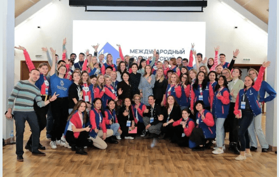

Культурное волонтерство – это активное движение, заключающееся в оказании добровольной и безвозмездной помощи в сфере культуры. Волонтеры участвуют в реализации (инициации) мероприятий, организуемых учреждениями культуры, принимают участие в реставрации культурных памятников, занимаются просветительской деятельностью. В рамках федерального проекта «Создание условий для реализации творческого потенциала нации» («Творческие люди») национального проекта «Культура» разработана программа «Волонтеры культуры», которая направлена на обеспечение поддержки добровольческих движений, в том числе в сфере сохранения культурного наследия народов Российской Федерации, включая деятельность по сохранению исторического облика малых городов. Основными задачами программы являются формирование общества волонтеров, задействованных в добровольческой деятельности в сфере культуры, обеспечение методологической, информационной, ресурсной поддержки деятельности, в том числе в сфере сохранения культурного наследия народов Российской Федерации, а также популяризация добровольческого движения в сфере культуры путем организации форумов и практических сессий. Мероприятия, в которых можно принять участие, публикуются на порталах: добровольцыроссии.рф волонтеры-культуры.рф Координация реализации программы «Волонтеры культуры» на уровне региона осуществляется Ассоциацией волонтёрских центров в Республике Башкортостан. Региональный руководитель Всероссийского общественного движения "Волонтеры культуры" – Лира Волкова. aisaevna@mail.ru #волонтёрыкультурыРБ #волонтёрыкультуры #АВЦ #МКРБ По официальной статистике движения «Волонтеры культуры» в Республике Башкортостан на 01.01.2023 зарегистрировано 7.305 волонтеров культуры. Открыто 32 центра волонтёров культуры на базе учреждений культуры. В 2022 году в Республике Башкортостан 97 объектов культурного наследия приведено в порядок, на 12 объектах культурного наследия были проведены ремонтно-восстановительные и благоустроительные работы с участием волонтеров культуры. К примеру, 23 апреля на территории МАУ РДК «Йэшлек» в формате субботника прошел Всероссийский день заботы о памятниках истории и культуры. Волонтеры культуры благоустроили прилегающую территорию и Сквер Героев, а также приняли активное участие во Всероссийской акции «Ночь музеев», «Библионочь», «Ночь искусств». Мероприятия, в которых вы можете принять участие, можно отслеживать на порталах Добровольцыроссии.рф и Волонтеры-культуры.рф
